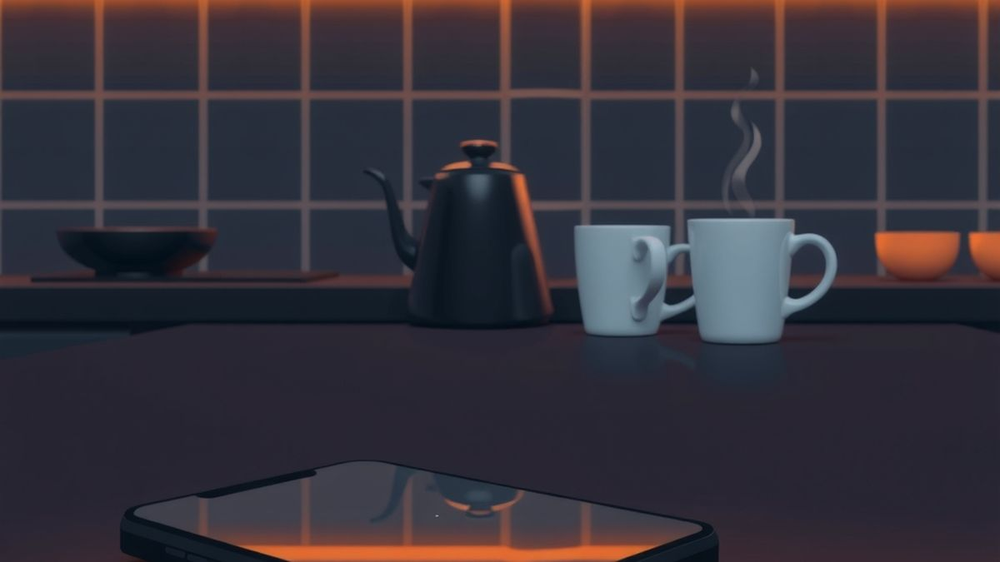

Boredom and Phone Use: Why Boredom Isn't an Emergency
Why you grab your phone the second you're bored, what studies say it does to the boredom, and how to treat that feeling as a signal instead of a crisis.


TL;DR
- Boredom is a signal: you want to be engaged and you aren't. It's not a malfunction, and it passes.
- In a study of 83 PhD students, more boredom made a phone pickup about 1.4 times as likely, and boredom was slightly higher afterward, not lower.
- A 2026 study of more than 700 people found the stronger driver is disliking boredom. The more you treat it as unbearable, the more you scroll.
- Some boredom may help: in small lab studies, people given a dull task first came up with more creative ideas.
- Try a two-minute rule: notice it, name it, wait. Then answer what it's actually asking for, often a little movement.
The kettle is on. It needs about ninety seconds. Your hand is already in your pocket.
By the time it clicks off you've seen four stories, half a video and a headline you'll think about all afternoon. The tea goes cold while you finish the thread.
Nobody decided that. Ninety seconds of nothing showed up, and your body treated it like a fire alarm. That's the real story of boredom and phone use: the problem usually isn't the boredom. It's that we've started handling a normal, mild feeling as an emergency that needs a fix right now.
Here's what the research says that feeling is, why the phone is a poor fix for it, and how to stop answering it on reflex.
Why you reach for your phone when you're bored
Psychologists have argued about how to define boredom for a long time. A widely cited 2012 paper by John Eastwood and colleagues pulled the theories together into one plain sentence: boredom is wanting to be engaged in something satisfying, and not being able to.
Read that again, because it changes how the feeling looks. Boredom isn't emptiness. It's a want. It's your attention asking for something better to do.
The phone answers that request faster than anything else in your life. It's always in reach, it's never boring for the first few seconds, and it's been the answer so many times that the move is automatic. Wait in a line, finish a task, stand by a kettle: hand, pocket, unlock. The cue is the gap itself.
That's why "just use it less" rarely works. You're not fighting a decision. You're fighting a reflex that fires dozens of times a day, usually before you notice. We wrote about how feeds are built to keep that reflex firing in Willpower Isn't the Problem.
Boredom and phone use: does scrolling fix it?
Mostly, no. The best evidence comes from a 2021 study in Royal Society Open Science by Jonas Dora and colleagues at Radboud University in the Netherlands.
They followed 83 PhD students through three working days. Every hour, each person rated how bored and how tired they felt, while an app logged their real phone use in the 20 minutes before and after each rating. No guessing, no memory.
Two things stood out:
- Boredom triggered the pickup, but not a longer session. People grabbed the phone more often when bored. They didn't use it for longer.
- The phone didn't relieve it. The researchers expected a phone break to bring boredom down. After using the phone, boredom was slightly higher instead. The effect was small, but it went the wrong way.
Be careful with this one. It's observational, so it shows a link, not proof that the phone caused the extra boredom. The sample was young academics with Android phones, the analysis didn't follow the authors' original plan, and most breaks lasted under two minutes, which may be too short to help anyone. The authors themselves warn against building policy on it.
Still, it matches what a lot of people feel. The quick check doesn't scratch the itch. It just moves it, and the dull task you came back to now looks even duller next to the feed.
The problem isn't boredom. It's treating it like an emergency.
This is the part of the research that rarely makes the headlines, and it's the most useful.
In 2026, a team including University of Essex researchers (Tam, Van Tilburg and Chan) published two studies in Motivation and Emotion. The first surveyed 495 people. The second followed 261 people across three surveys, four months apart. The question wasn't just "how bored are you?" but "how much do you dislike being bored?"
People who strongly disliked boredom used their phones more, reported more excessive use, and also felt bored more often and more intensely. Over time, screen time ran longer during the periods when someone's dislike of boredom was higher than usual for them. The authors' conclusion: an aversive attitude toward boredom may be what pushes people to the phone.
The usual caveats apply: these are surveys and screen-time reports, not an experiment. But the idea fits the rest of the evidence. Two people can feel the same flat ninety seconds. One shrugs. The other feels a small alarm go off. Only one of them reaches for the phone every time.
The good news: an attitude can change. You can't remove boredom from your life. You can lower how urgent it feels.
Do people really prefer an electric shock to sitting still?
You may have seen this one. In a 2014 paper in Science, Timothy Wilson and colleagues ran 11 studies where people sat alone with their thoughts for 6 to 15 minutes. Most didn't enjoy it much. In one study, people could give themselves a mild electric shock during 15 minutes alone, a shock they'd earlier said they would pay to avoid. Twelve of 18 men and 6 of 24 women pressed the button at least once.
That's a striking result, and it's often overstated. A response from Kieran Fox and colleagues pointed out that most participants rated just thinking as somewhat enjoyable, the shock was rated only mildly unpleasant, and most people didn't shock themselves at all. Fair reading: sitting with nothing is uncomfortable for a lot of us, and some people will reach for any stimulation to end it. Not: humans can't stand their own minds.
Is it good to be bored?
Some of the time, probably yes. The best-known evidence comes from Sandi Mann and Rebekah Cadman at the University of Central Lancashire. In 2014 they had people copy numbers out of a phone book for 15 minutes, then think of as many uses as they could for a pair of plastic cups. The bored group came up with more ideas than people who skipped the dull task. A second study found boring reading helped even more than boring writing, which the authors linked to more room for daydreaming.
Keep that in proportion. These were small lab studies (80 and 90 people) measuring one kind of quick creativity task. They don't show that boredom makes you a creative person. They do suggest that a quiet mind wanders somewhere, and that's hard to do while a feed is filling every gap.
What your boredom is asking for
If boredom is a want, the useful question isn't "how do I make this stop?" It's "what is this asking for?" Most bored moments fall into a few kinds.
| When it shows up | What it's often asking for | A better answer than the feed |
|---|---|---|
| Waiting (lines, kettles, loading bars) | Nothing. It's a short gap. | Let it be empty. Look around. It ends on its own. |
| Mid-task at work or study | A real break, or a harder version of the task | Stand up for two minutes, or set a small challenge inside the task |
| After sitting for a long time | Movement | Ten squats, a walk to the window, a short stretch |
| Evenings with nothing planned | Connection or something to look forward to | Text one person directly, or plan one thing for the weekend |
| The same flat feeling for days | Possibly more than boredom | See the section below |
Notice how many rows end in "get up." Sitting still for a long time is one of the most reliable recipes for a restless, flat feeling, and a little movement changes your state faster than another video. That idea is the heart of Exercise Snacks.

How to stop grabbing your phone when you're bored
You don't need a detox. You need a different first response. Here's a short routine you can use the next time the itch shows up.
- Catch the reach. You'll often notice it with the phone already in your hand. That still counts. Put it down, screen first.
- Name it. Say it in your head: "bored." Naming the feeling makes it a thing you're having, not a thing that's happening to you.
- Wait two minutes. Not forever. Two minutes is long enough to find out the feeling usually fades or changes, and short enough to actually do.
- Ask the table question. Is this a gap, a need for a break, a need to move, or a need for people? Pick the matching answer.
- If it's movement, keep it tiny. Ten squats or ten push-ups against the counter. Small enough that you'll do it, physical enough to shift how you feel.
Two moves keep the routine going on hard days. Make the reach a little slower: turn off feed notifications and move your most-scrolled app off the Home Screen, which we cover in Dopamine Detox Is the Wrong Frame. And practice on easy gaps first, like the kettle or an elevator, before trying it at 11 p.m. on the couch.
The movement, with easier versions
- Squats: feet about shoulder-width, sit back as if to a chair, chest up, stand. Easier: sit all the way down onto a real chair and stand back up.
- Push-ups: body in a straight line from head to heels, lower with control. Easier: hands on a wall or kitchen counter; the higher the surface, the lighter it is.
- A short walk: to the window, around the room, down the hall. Counts.
Stop if anything hurts. If you have an injury, a heart condition, are pregnant or haven't exercised in a long time, check with a doctor first.
When it's more than boredom
Ordinary boredom comes and goes with the situation. If you feel flat, empty or uninterested in things you used to enjoy, most days, for weeks, that's worth taking seriously. It can be a sign of depression or of something else a professional can help with, and it isn't something to fix with a better screen-time setup.
Reviews of the research do find that people who get bored easily are more likely to struggle with their phone and other technology, though nearly all of those studies are snapshots that can't show which comes first. If phone use has become the way you escape feelings that are heavy or getting worse, talk to a doctor or a mental health professional. In the US, you can call or text 988 any time to reach the Suicide & Crisis Lifeline.
Where Rep Rot fits
The hardest part of all this is the first second, when the reach happens before you've noticed. Rep Rot puts something in that second. Rep Rot locks the apps you lose hours to until you get up and move: when you hit a limit you set, the app stays locked until you do a short set of squats, push-ups, sit-ups, pull-ups or a plank, counted by your iPhone's camera on the phone itself.

Nothing is recorded or uploaded, and Rep Rot can't see which apps you use. It's not a fortress, either: Screen Time limits can be worked around by someone determined. The point is smaller and more honest than that. It turns the reflex into a pause, and it hands the boredom the thing it was often asking for: a little movement.
Rep Rot is in testing now. Email help@reprotapp.com for early access.
Sources: Eastwood, Frischen, Fenske & Smilek, The Unengaged Mind: Defining Boredom in Terms of Attention, Perspectives on Psychological Science (2012); Dora, van Hooff, Geurts, Kompier & Bijleveld, Fatigue, boredom and objectively measured smartphone use at work, Royal Society Open Science (2021); Tam, Van Tilburg & Chan, Swiping away dullness: Disliking boredom predicts more smartphone use, Motivation and Emotion (2026), and University of Essex repository record; Wilson et al., Just think: The challenges of the disengaged mind, Science (2014); Fox, Thompson, Andrews-Hanna & Christoff, Is thinking really aversive? A commentary on Wilson et al.'s "Just think", Frontiers in Psychology (2014); Mann & Cadman, Does Being Bored Make Us More Creative?, Creativity Research Journal (2014); Tagliaferri et al., Connected by Boredom: A Systematic Review of the Role of Trait Boredom in Problematic Technology Use, Brain Sciences (2025); 988 Suicide & Crisis Lifeline.